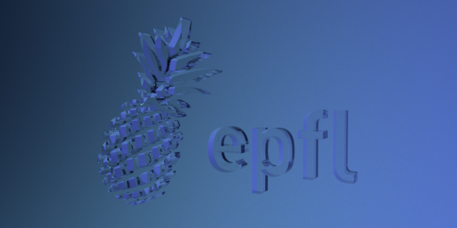
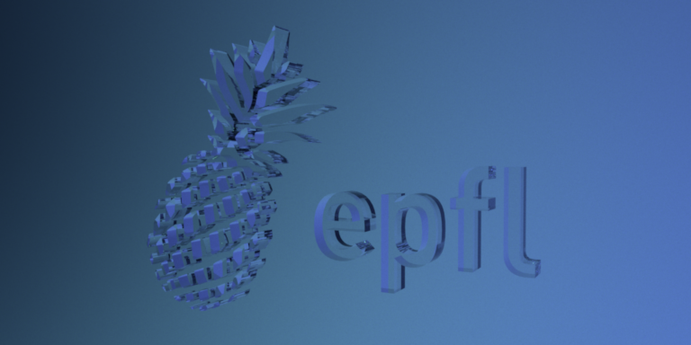
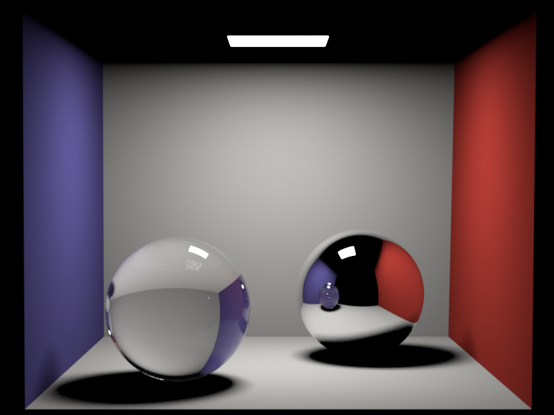
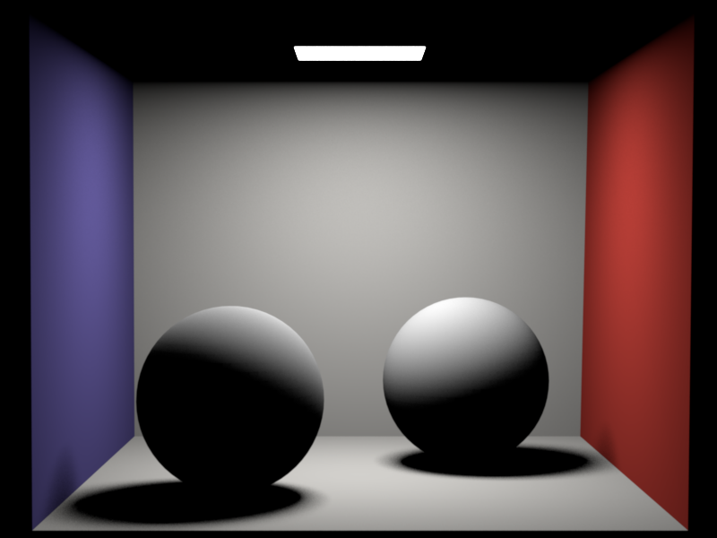
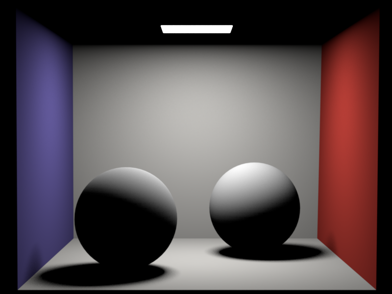
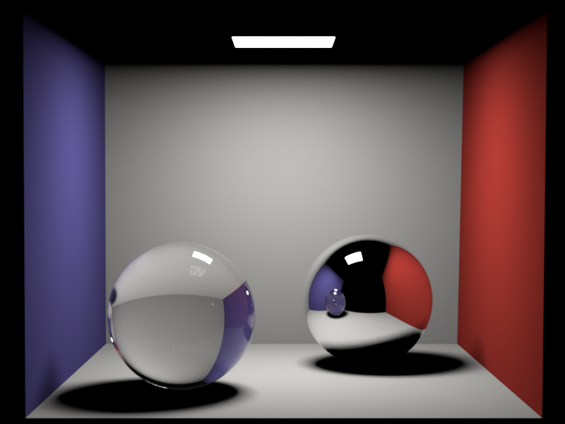
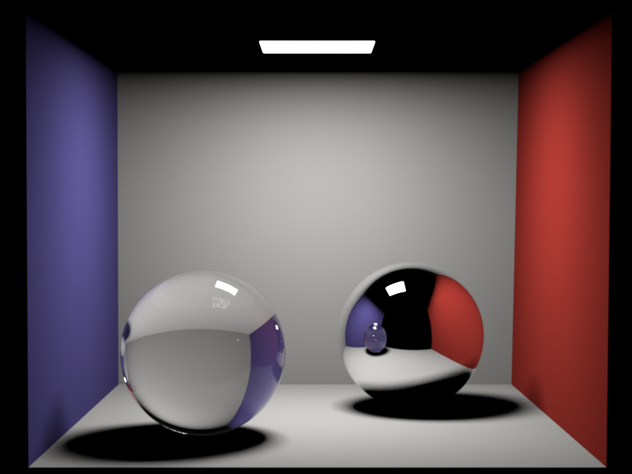

**Homework 4**
Student name: Baris Sevilmis
Sciper number: 306798
Area lights (25 pts)
====================
As one of the first objectives, 3 new methods were added to Mesh class. Mesh::sampleUniformSurface()
does indeed return the sampled position on surface. Returning probability density is a simple function call that returns
DPDF::getNormalization(), and is called Mesh::getNormalizationConstant().
Lastly for the computation of surface normals, we use Mesh::surfaceNormal() function.
surfaceNormal and sampleUniformSurface works as following:
Get sample point using dpdf sample()
Utilize baryzentric coordinates to find corresponding index information from m_V and m_N.
Using a 2d sample to create alpha and beta from their corresponding equations.
If(sampleUniformSurface)
Return weighted point summation using alpha, beta and precomputed points.
Else if(surfaceNormal)
if(any Normal exists within m_N)
Return weighted point summation using alpha, beta and precomputed points.
else
Return normal from normalized cross product of triangle indices(direction vectors: dir1 and dir2)
AreaLight class was implemented to compute certain EmitterQueryRecord objects radiance rates given the difference vector of shading point to light point.
Therefore, design was made around the radiance property. AreaLight is built upon Emitter abstract class, in which explicit constructor reads the radiance property from PropertyList
object. Second functionality, lightEmmitPerRecord, does return radiance value multiplied by the angle between the normal and difference of shading and light point.
Distribution Ray Tracing (40 pts)
=================================
Whitted integrator is implemented to handle distribution ray tracing. Since we don't want to increase abstract integrator virtual method amount, we will define one requirement of this function in a
new set of class called Helper. This will be explained shortly.
Whitted contains no special property to be read. Li() function provides the details of the Whitted class.
(!!!) Scene class has been added a private variable to keep meshes with emitters.
(!!!) It is because, finding meshes with emitters results in additional unnecessary computational cost.
(!!!) Var = Variable, used to explain variable in specific formulas.
Design of Whitted:
As usual start by checking if ray intersects the scene
if(true):
(Var smp_pnt,Var smp_nrm,Var pdf)Get mesh of next sample point and find specific point, normal and pdf of uniformly distributed version of sample point.
(Var cos_theta, Var sqrdNrm)Find cos_theta between the difference vector of light point and shading point versus light normal in addition to squarednorm of difference vector.
Convert your difference vector and negative directed version of ray into local coordinates.
(Var bsdfRes)Use conversion to create new BSDFQuery object and evaluate it with intersection meshes BSDF eval method.
(Var ilr)Retrieve incoming light radiance from the scene and EmitterQueryRec object using methodology used in AreaLight class.
if(current mesh with emitter is same as mesh of intersection):
(Var)Add radiance value of intersection mesh to the result
Note: please commit both EXR and PNG versions of your renders in the `results/homework-X` folder.
Dielectrics (25 pts)
====================
We are provided with fresnel equation implementation already.
For the implementation of the Dielectric classes sample method, following design choice was used:
Get cos_theta(cosinus of the angle) information between provided records incident direction and surface normal
Set measure property of bsdf record to discrete
if(sample.x less than fresnel eq):
Reflection: set bsdf properties as in mirror
Else:
Refraction case: set bsdf properties depending on cos_tht
Set outgoing direction vector and normalize it
Return square of relative refractive index in the sampled direction(BSDFQuery::eta)
(!!! Second cos_theta variable refers to the cos_theta of outgoing direction and surface normal.)
Whitted-style ray tracing (10 pts)
==================================
For the last part of assignment, whitted integrator is improved.
As mentioned in assignment instructions, if the material is diffuse, we fall back to our algorithm in section 2.
Otherwise, we will utilize a simple recursion to achieve provided equation.
Create a new BSDFQueryRecord from the negative direction of ray
(Var clr)Sample new Color3f from BSDF record and a new sample point
(Var newRay)Create new ray from the intersection point and bsdf records outgoing direction(converted into world coordinates)
if provided sample point is less than 0.95(range:[0.00, 1.00]) and sample.x is greater than zero
result = Li(newRay) * clr / 0.95
return result
else
return Color black(0,0,0)
Dielectric logo:


Cornell box (Whitted):

Note: please commit both EXR and PNG versions of your renders in the `results/homework-X` folder.
Feedback
========
We would appreciate any comments or criticism to improve the projects in future years--naturally, this part will not be graded. Examples of information that is useful to us includes:
* How much time did you spend on the assignment? How was it divided between designing, coding, and testing?
* What advice should we have given you before you started?
* What was hard or surprising about the assignment?
* What did you like or dislike? What else would you change?
 

 
